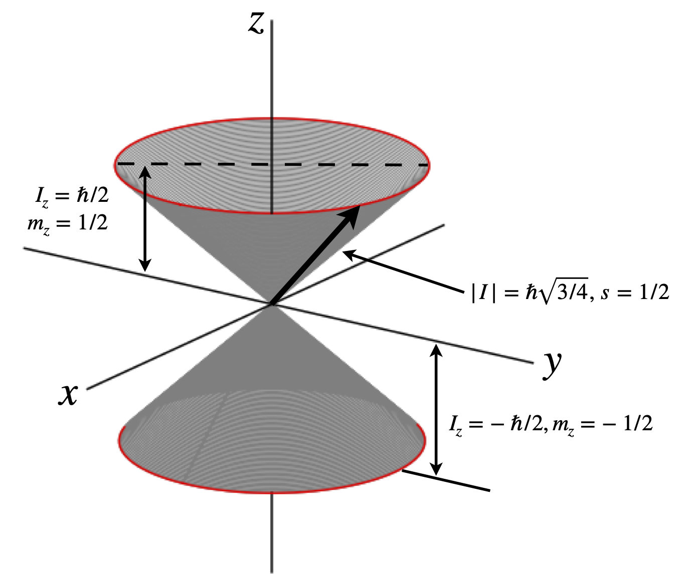

4 Basis sets and bra-ket algebra
Contents
4 Basis sets and bra-ket algebra#
In this section, bra-ket algebra is described more fully together with basis sets and how they are intimately related to the bra and ket. Some algebra for manipulating the bra and ket is also described.
4.1 To each ket \(|\;\rangle\) belongs a bra \(\langle\;|\)#
In the Dirac notation, a ket is a column and a bra a row vector. The elements of the vector are those of the basis set used. Each ket always has a corresponding bra. The bra is formed as the conjugate transpose of the ket, which means converting column into row and then taking the complex conjugate of each term. Formally the ket is the Hermitian adjoint of the bra, see Chapter 7.4.8. For example, if the ket is
the bra is
where * indicates a complex conjugate. The \(a, b, c\) are the elements of the basis set being used. However, these are themselves only aliases or references to the actual properties. By manipulating these symbols, problems can be solved so that only at the end of the calculation do numbers have to be used.
The fact that the bra is the conjugate transpose of the ket means that the correspondence between them is antilinear, for example the ket \( a_1|\varphi_1\rangle +a_2|\varphi_2\rangle\) and its bra are always related as
where the superscript \(^*\) indicated the complex conjugate. Of course coefficient \(a\) will not always be complex, but that does not change the principle.
We do have to be careful about how we write things, for example when \(a\) is a complex number
The dot or inner product of two kets \(|\varphi\rangle\) and \(|\psi\rangle\) is the same as multiplying the bra of \(\varphi\) and ket of \(\psi\), or vice versa, and produces a number
and an outer product which is an operator and produces a matrix.
which are the same rules for any matrix as shown in Chapter 7. The only difference in their usage in quantum mechanics is that the elements of the basis set must form an orthogonal set. If they are also normalised they form an orthonormal set.
Summary of bra-ket properties#
The complex conjugate is indicated by superscript \(^*\), the adjoint by \(^\dagger, A, B\) are linear operators, \(a\)’s numbers
Linear operators are labelled as \(A,B\) and a Hermitian operator as \(H\). An arbitrary ket is labelled \(|x\rangle\) and \(a\) is a (complex) number. Superscript \(\dagger\) is the adjoint (conjugate-transpose), superscript \(*\) complex conjugate.
4.2 Discrete basis sets#
The bra and ket, equations 27 and 28 have terms \(a,\, b,\, c\) and these are the elements of the basis set chosen for the calculation. All quantum problems using bra-ket notation must have a basis set defined before the calculation starts. Unlike many calculations using vectors, the basis set does not usually represent spatial coordinates but is instead some other relevant property. The spin state of the proton, which is described next, is an example of this.
The spin state of an atom or nucleus can be described with a spin quantum number \(s\) and magnetic (azimuthal) quantum numbers \(m\), which, when \(s = 1/2\) has values \(+1/2\) or \(-1/2\), or, in general, \(m = +s, +s - 1, \cdots -s\) and thus is a range of values from \(s \to -s\) each separated from one another by unity. Sometimes the magnetic quantum number is labelled \(m_s\) or \(m_z\); the latter because it is the projection of angular momentum onto a unique axis normally labelled \(z\) when a unidirectional magnetic field is present, Fig. 4. The magnitude (expectation value of the angular momentum) is \(\hbar\sqrt{ s(s+1)}\). Nuclear spin angular momentum is usually labelled with \(I\) instead of \(s\). If a magnetic field \(B\) is along the \(z\)-axis, the energy of the spin depends on its orientation and is \(E = -\gamma m_z\hbar B\) where \(\gamma\) is the magnetogyric ratio with units of rad T\(^{-1}\) s\(^{-1}\).
The spin basis set for a spin half particle (electron, \(^1\)H, \(^{13}\)13C, etc.) can be constructed in terms of the two quantum numbers \(s\) and \(m\), labelled with two indices as \((s, m)\), and is
where \((1/2, +1/2)\), is a label describing one spin state, it has no mathematical significance, and the label \((1/2, -1/2)\) describes the other. In the case of spin half particles we conventionally reserve symbols \(\alpha\) to represent the state \((1/2, +1/2)\) and \(\beta\) to represent the state \((1/2, -1/2)\) and the basis set is now written as \((\alpha\,\beta)\) or as kets \(|\alpha \rangle\) and \(|\beta\rangle\) as \((|\alpha\rangle \;|\beta\rangle)\). Both notations are common. In this two-dimensional basis, the \(\alpha\) spin state \((s = 1/2, m = 1/2)\) is represented as the column vector in the standard basis set as \(\displaystyle |\alpha\rangle= \begin{bmatrix} 1 \\ 0 \end{bmatrix}\).
As \(\alpha\) is a basis element (basis ket) of the standard basis set, it is zero everywhere except for one element representing its position in the basis set and which is given the value of unity. Similarly the \(\beta\) spin state \((s = 1/2, m = -1/2)\) is represented as as \(\displaystyle |\beta\rangle= \begin{bmatrix} 0 \\ 1 \end{bmatrix}\), and the basis set could be written as
The basis set can be ordered differently; for example, \(\displaystyle (\beta,\alpha, ) \equiv \left(\begin{bmatrix} 0 \\ 1 \end{bmatrix}\begin{bmatrix} 1 \\ 0 \end{bmatrix}\right) \) would be equally valid, it is only necessary to decide in which order the elements are placed and keep to it.

Figure 4. Sketch describing spin quantum numbers and angular momentum for a \(^1\)H nucleus. The angular momentum vector \(\pmb{I}\) can be at any angle around the cone.
If there are two electrons (or nuclei) each with spin quantum number \(+1/2\) then we have, depending on spin orientation, a total spin of \(S = 1\) or \(0\), loosely speaking these correspond to spins being ‘parallel’ or ‘anti-parallel’ to one another. The complete set of quantum numbers is \(S=0, m=0\), and \(S=1\) with \(m=+1,0,-1\), making four states in all. A minimal basis set therefore has four terms
and four basis vectors. The vectors can be labelled with the quantum numbers \((s, m)\) as below, but any four unique symbols could be used, e.g. \(\xi, \psi, x, y\). The basis set order is also arbitrary;
It is important to realize that in \(| 0, 0 \rangle\) for example, the \(0, 0\) is just a label, it has no other meaning per se but the label tells us that this is state \((0, 0)\); it does not enter into the maths. The basis set above is orthonormal as can be seen by calculating \(\langle 0, 0 | 1, -1\rangle\) or any of the other eleven combinations.
To study d-orbitals a basis of five elements is needed. These can be characterized either by the wavefunction labels, \(z^2, x^2 - y^2\), etc. or by the orbital angular momentum quantum numbers, \(L\), which for d-orbitals has two units of angular momentum and \(m\) quantum numbers which take values from \(-2 \to 2\) in unit steps as \(2, 1, 0, -1, -2\). The basis can be written using the names of the orbitals as shown on the left, or by using quantum numbers on the right,
Either way, the \(z^2\) wavefunction is \( \psi_{z^2}=\begin{bmatrix} 0\\0\\1\\0\\0 \end{bmatrix}\) and similarly for the other wavefunctions.
A state such as \(\Psi=a\psi_{xy}+b\psi_{xz} = \begin{bmatrix} 0\\a\\0\\0\\b \end{bmatrix}\).
4.3 Inner products \(\langle\alpha |\beta\rangle\)#
The dot or inner product of the two vectors is always a number, i.e. a scalar. Using the normalized and orthogonal (spin) states \(\alpha,\beta\)
There is a somewhat peculiar situation with respect to spin angular momentum as opposed to orbital angular momentum, in that we do not know what the equations describing spin angular momentum are because they are not functions of space. However, this is, in fact, unimportant, because everything can be derived by simply defining the symbols for these states.
Consider the state
which is the linear combination of the \(\alpha\) and \(\beta\) basis spin states where \(a\) and \(b\) are numbers, often complex numbers. This new state can be represented as the column vector \(\displaystyle |\varphi\rangle =\begin{bmatrix}a\\b\end{bmatrix}\). To normalize the function \(\varphi\), the same procedure as for any vector is followed. The inner or dot product \(\langle\varphi |\varphi\rangle\) is calculated
and the normalization equation defined as \(N^2\langle\varphi |\varphi\rangle = 1\) with normalization constant \(N\). Hence \(N^2 = a^*a + b^*b\) and normalized wavefunction is
If the constants are real numbers, the complex conjugates are equal to the number. If there are equal amounts of \(a\) and \(b\) in \(\varphi\), then
To find out how much of state \(\alpha\) is in the linear combination state \(\varphi\), this is probed with the basis state \(\alpha\). The calculation is
If the coefficients \(a\) and \(b\) are real and normalized to unity when forming \(\varphi\) so that \(a^2 +b^2 =1\), then
but, in either case, this result is interpreted to be the probability amplitude for the state \(\varphi\) to collapse into the state \(\alpha\) and the probability of this happening is \(a^2\). Similarly, acting on \(\varphi\) with \(\beta\) gives the probability amplitude \(\langle\beta|\varphi\rangle =b\). As the product \(\langle \alpha|\varphi\rangle\) evaluates to the coefficient \(a\), we can write the odd looking equation
Expanding this out produces
Two kets in the basis \((x, y, z, \cdots)\),
form the dot or inner product as do any single column or row matrices or vectors
If a continuous basis set is being used with a function such as \(R(r)\) or any wavefunction \(\psi(x)\) then the inner product becomes an integral. The basis set elements are so closely spaced that the summation of the finite basis is replaced by the integral, and then we have the familiar formula
4.4 Outer products:\(|\alpha\rangle\langle \beta|\) and projection operators \(|\alpha\rangle\langle\alpha|\) are matrices#
Objects of the form \(|\alpha\rangle\langle \alpha|\), \(|\alpha\rangle\langle \beta|\) or \(|\psi_{z^2}\rangle\langle \psi_{xy}|\) and so forth are always square matrices and correspond to operators. This means that when they are placed to the left of a ket they operate on this and a new ket is formed. Using the definitions above
4.5 Hermitians, Hamiltonans in bra-ket notation#
The ket \(|\psi\rangle\) and bra \(\langle\psi|\) are Hermitian conjugates of each other, this means that to go from one to the other involves transposing the vector and taking the complex conjugate, i.e making the adjoint, and their order is also reversed. The Hamiltonian operator is Hermitian. The same process also applies to operators, for example
and superscript \(\dagger\) indicates the adjoint. The Hermitian operator is equal to its adjoint, i.e.
and an example of this is \(\displaystyle \langle\psi |\pmb A|\psi\rangle^*=\langle \psi |\pmb A^\dagger|\psi\rangle=\langle\psi |\pmb A|\psi\rangle\)
Rule#
To obtain the Hermitian conjugate of bras, kets and operators
replace constants by their complex conjugates, bras by their kets, kets by their bras and operators with their adjoint.
reverse the order of these, except for constants whose position is not important.
4.6 Manipulating bra’s and ket’s with operators#
The outer product is a matrix and hence a linear operator \(\pmb A\) and expressions such as
are often met. The important point to note is that the bra \(\langle \alpha|\) is always a row vector and the complex conjugate of column vector or ket \(|\alpha\rangle\)
(i) \(\langle\alpha |\pmb A|\beta\rangle\) is an expectation or average value#
The expectation or average value is \(\langle E\rangle=\langle\alpha |\pmb A|\beta\rangle\) if \(\pmb A\) is the Hamiltonian (hermitian) operator and produces an energy, assuming that the wavefunctions represented by \(\langle\alpha|\) and \(|\beta\rangle\) are normalised.
We suppose that the vectors \(\alpha\) and \(\beta\) are initially written as column vectors. The general form is
where the \(^*\) indicates the complex conjugate of ket \(a\), the column vector \(\alpha\), or \(|a\rangle\), which is also transposed.
Suppose for the purposes of illustrating the maths only the operator is $\(\pmb A=\begin{bmatrix} 0 & 2i & 1\\ 0 & 0 & 0\\ 0 & 6 & -3i \end{bmatrix}\)$
which is clearly not Hermitian and let \(|\alpha\rangle=\begin{bmatrix}i\\0\\3\end{bmatrix},\quad |\beta\rangle = \begin{bmatrix}0\\2\\-i \end{bmatrix}\)
Transposing and making the complex conjugate produces the bra \(\langle\alpha|\), therefore
The matrix multiplication diagrams, chapter 7 fig 7 show that this product is a number. Multiplying out starting at the right gives
(ii) \( \langle \pmb A\alpha|\beta\rangle= \langle \alpha|\pmb A^\dagger \beta\rangle\)#
The quantity \(\langle \pmb A\alpha|\beta\rangle\) is a number. This can be appreciated by noticing that \(H\alpha\) is a matrix left multiplying a column vector and so produces a column vector, see fig 7 chapter 7. The vector \(\alpha\) has to be a column as only a column vector can be left multiplied by a matrix. This resultant vector has to be changed into a row vector and made into its complex conjugate to become a bra and so to be able to form a dot product with column vector \(\beta\).
The equality can be confirmed by manipulating the symbols using the rules given above in 4.5., i.e. \(\langle \pmb A\alpha|= \langle\alpha |\pmb A^\dagger\) and \(|\pmb A^\dagger \beta\rangle|=\pmb A^\dagger |\beta\rangle\),
which is a number. To check this argument \(\alpha,\beta\) and \(\pmb A\) as above are used again
as a matrix can only left operate on a column vector. The bra is the complex conjugate and transpose, \(\langle \pmb A\alpha|= \begin{bmatrix}3&0&9i\end{bmatrix}\) and so
The symbol \(\dagger\) represents the conjugate transpose or adjoint operation. Thus \(\pmb A^\dagger\beta\) is
and now take the dot product with \(\langle \alpha|\),
(iii) Eigenvalues of a Hermitian operator \(\pmb H\) are orthogonal#
We can show that two eigenvectors are orthogonal by manipulating the bras and kets. Two eigenvectors of the hermitian operator are \(|\psi\rangle,|\varphi\rangle\) hence
where the \(a\)’s are constants. Since \(\pmb H\) is hermitian it is equal to it its adjoint or transpose of its complex conjugate, \(\pmb H=\pmb H^\dagger\) hence we can write eqn. 32b as
and left multiply eqn. 32a by \(\langle\varphi|\) on the left and 32c \(|\psi\rangle\) on the right
and subtract them
and thus when \(a_2-a_1 \ne 0\) then \(|\varphi\rangle\) and \( |\psi\rangle\) are orthogonal.
(iv) Projection Operators are matrices that operate on a ket#
The kets \(|\alpha\rangle=\begin{bmatrix}1\\0\end{bmatrix},\;|\beta\rangle=\begin{bmatrix}0\\1\end{bmatrix}\) are orthogonal \(\langle\alpha|\beta\rangle=\langle\beta|\alpha\rangle=0 \) as may be seem by forming their dot product. They form the operator
If this operates on a ket such as
the new ket, \(b|\alpha\rangle\) is produced. This can be seen by manipulating the symbols and knowing that the the bra, ket \(|\alpha\rangle,|\beta\rangle\) are orthonormal.
where \(\langle\beta|\alpha\rangle=0\) and \(\langle\beta|\beta\rangle=1\) was used and a constant can be moved to the front of any bra-ket. The result of \(|\alpha\rangle \langle \beta|\) acting on the ket \(|\varphi\rangle\), is to produce another ket which is \(b|\alpha\rangle\), and hence, \(|\alpha\rangle\langle \beta|\) is an operator.
The matrix calculation can be done by multiplying the two right-hand vectors first, operating with \(\langle \beta|\) on \(|\varphi\rangle\) and then multiplying the answer by \(|\alpha\rangle\),
The order of multiplication can be changed so that the operator is formed first
and the magnitude of the vector is \(\sqrt{b^2+0^2}=b\).
The operator \(|\alpha\rangle\langle\alpha|\) will project \(a|\alpha\rangle\) out of the ket \(|\varphi\rangle\), and is therefore also called a projection operator. The calculation is
and \(|\alpha\rangle\langle\alpha|\varphi\rangle\) is the projection of \(\varphi\) along \(\alpha\).